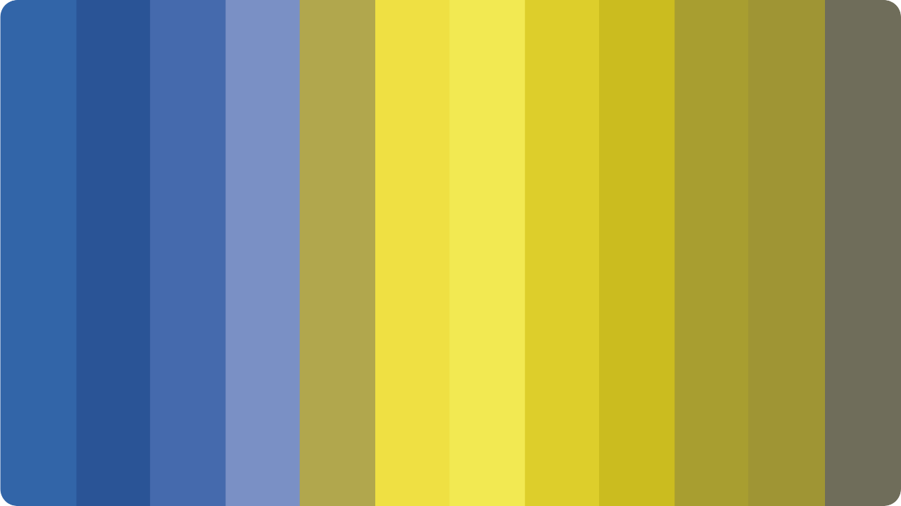
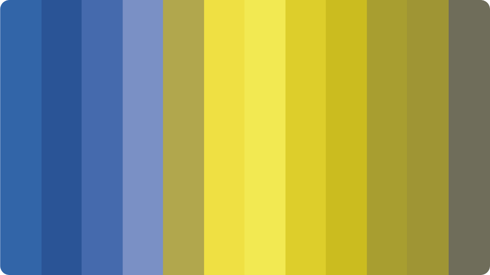

Pure black may increase the eye strain for the user. Dark grey on the other end is easier on eyes and surfaces
can express a wider range of color,
elevation and depth.
elevation and depth.
Provide clear and consistent navigation in your designs. If you’re looking for specific navigation options
for your web or app design, check here.
02
Include contrasts
Make sure that there is sufficient contrast between the elements in the foreground and background. You can
always check this with an online contrast checker.
01


Color deficiencies
Color blindness doesn’t mean you can’t see the color. It just means that there are some pairs
of colors that you have trouble distinguishing. So don’t rely on color alone. Let’s have a look
on the different color blindness.
of colors that you have trouble distinguishing. So don’t rely on color alone. Let’s have a look
on the different color blindness.
This is how the different colors look usually.
This is what the colors look like with
a green deficiency.
a green deficiency.
This is what the colors look like with
a red deficiency.
a red deficiency.
This is what the colors look like with
a blue deficiency.
a blue deficiency.
This is what the colors look like with
a complete color deficiency.
a complete color deficiency.
Tips for a great dark mode
The Dark mode is one of the most requested features over the past few years. Both Apple and
Google made a dark theme an essential part of UI. Dark theme reduces luminance and provide
safety in dark environment and also reduces the eye strain.
Google made a dark theme an essential part of UI. Dark theme reduces luminance and provide
safety in dark environment and also reduces the eye strain.

Don’t use pure white in dark theme, in case if
we would use pure white color it would visually
vibrate against dark backgrounds.
we would use pure white color it would visually
vibrate against dark backgrounds.
Contrast Checker
Use online contrast checkers to ensure that there is proper
contrast in your designs to guarantee accessibility.
contrast in your designs to guarantee accessibility.
Colorable

Saturated colors can look good on light surfaces. However, they can visually vibrate on dark surfaces, making
reading much more difficult. It is better not to use so strongly saturated tones, as they are more legible on
dark surfaces.
Don’t use large blocks of bright color in dark themes. The large blocks of color pulls focus from our most
important elements.
When converting from an existing light theme to a dark theme one has to keep in mind the visual emotion that is
evoked by adjusting
the color contrast etc. A dark mode does not always have to be derived from the existing light theme.
the color contrast etc. A dark mode does not always have to be derived from the existing light theme.


Make your designs accessible
Make sure your design are accessible. Ensure that any user with any visual impairment can use and consume your
digital apps and websites. Get to know some important rules to make sure your designs are accessible.
Accessibility is an important aspect of design. It ensures that any user with any disability can use and consume
your digital apps and websites. Here you will learn
more about the different color vision disabilities, how to make sure your designs
are accessible, and how to create a dark mode.
more about the different color vision disabilities, how to make sure your designs
are accessible, and how to create a dark mode.
Accessibility
Normal
01
Deuteranopia
02
Protanopia
03
Tritanopia
04
Monochromacy
05

Don’t rely on colors
Don’t just use color to convey information. If we only use color to make it clear where the user is, this will
be difficult for a user with color vision impairment. Use additional elements to make it clear where you are.
03
Interactive elements
04
Right spacing
Use headings and spacing to group related content and create some hierarchy in your designs. Find some
examples here.
05
Avoid pure black
01
Saturated colors
02
Pure white Text
03
Large bright blocks
04
Emotional aspect
05
 

contrast checker
here
here
here


Layout
Accessibility
Colors
Fonts
Icons
Color deficiencies
Make your designs accessible
Contrast checker
Tips for a great dark mode
Content of this page